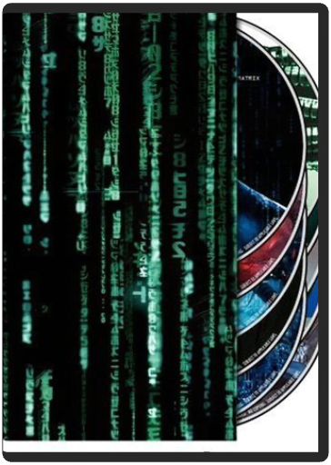The Ultimate Matrix CollectionAndrew R. Jones, Andy Wachowski, Josh Oreck, Kôji Morimoto, Lana Wachowski  The definitive ten-disc DVD set, The Ultimate Matrix Collection features all three films in the trilogy together for the first time ever with a newly remastered picture and sound for The Matrix. Also included is the companion piece The Matrix Revisited and the best-selling The Animatrix, plus five entirely new DVDs packed solid with brand-new supplemental materials that encompass every aspect of the Matrix universe, including two new audio commentaries on each film, Enter the Matrix video game footage, 106 deep-delving featurettes/ documentaries and much more! 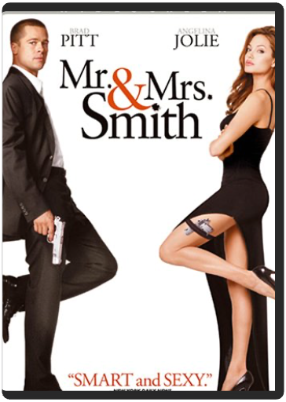Mr. & Mrs. SmithDoug Liman Brad Pitt and Angelina Jolie smolder in one of the most anticipated, sizzling action films ever made. After five (or six) years of vanilla-wedded bliss, ordinary suburbanites John and Jane Smith (Pitt and Jolie) are stuck in a rut the size of the Grand Canyon?until the truth comes out! Unbeknownst to each other, they are both coolly lethal, highly paid assassins working for rival organizations. And when they discover they're each other's next target, their secret lives collide in a spicy, explosive mix of wicked comedy, pent-up passion, nonstop action and high-tech weaponry that gives an all-new meaning to "Till death do us part!" 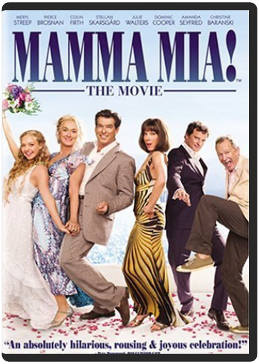Mamma Mia! The MoviePhyllida Lloyd Widescreen. Meryl Streep, Pierce Brosnan and Colin Firth star in this big screen adaption of the hit musical based around the timeless hits of Swedish pop sensations Abba. The plot sets in motion when Sophie (Amanda Seyfried, Mean Girls), daughter of Donna (Streep), sends a letter to three men, inviting them to her wedding—because after reading her mother's diary, she suspects that one of them is her father. When all three arrive at the Greek island where Donna runs a hotel, Donna flips out and finds that passions she thought she'd laid aside are coming back to life. Music and fun ensue. 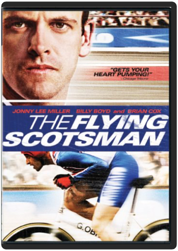The Flying ScotsmanDouglas Mackinnon Based on the incredible true story of amateur cyclist Graeme Obree, who breaks the world one-hour record on a bike he made out of washing machine parts. 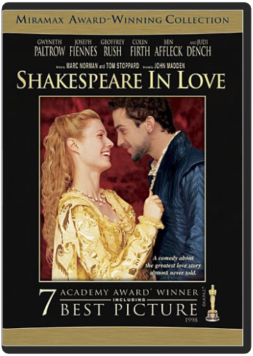Shakespeare in LoveJohn Madden Triumphant winner of 7 Academy Awards(R) — including Best Picture — this witty, sexy smash features Oscar(R)-winning Best Actress Gwyneth Paltrow (SLIDING DOORS, THE ROYAL TENENBAUMS) and an amazing cast that includes Academy Award-winners Judi Dench (Best Supporting Actress), Geoffrey Rush (Best Actor — SHINE), and Ben Affleck (GOOD WILL HUNTING, PEARL HARBOR). When Will Shakespeare (Joseph Fiennes — ELIZABETH) needs passionate inspiration to break a bad case of writer's block, a secret romance with the beautiful Lady Viola (Paltrow) starts the words flowing like never before! There are just two things he'll have to learn about his new love: not only is she promised to marry someone else, but she's successfully impersonating a man in order to play the lead in Will's latest production! A truly can't-miss motion picture event with outstanding critical acclaim to match its impressive collection of major awards — everyone will love this funny behind-the-scenes look at the writing of the greatest love story ever told! 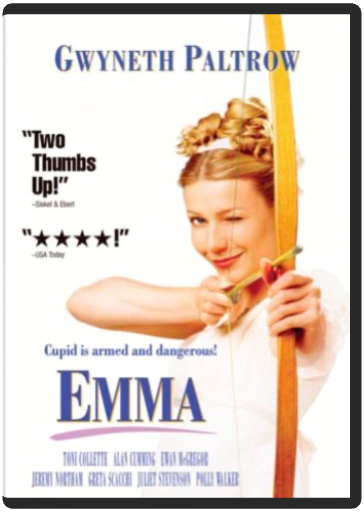EmmaDouglas McGrath This delightfully fun and lighthearted comedy is based on the story that inspired the hit movie CLUELESS! Dazzling Gwyneth Paltrow (SHAKESPEARE IN LOVE, THE ROYAL TENENBAUMS) shines as EMMA, a mischievous young beauty who sets up her single friends. Funny thing is ... she's not very good at it! So when Emma tries to find a man for Harriet (Toni Collette — THE SIXTH SENSE, ABOUT A BOY), she makes a hilariously tangled mess of everyone's lives. You'll enjoy all the comic confusion ... until Emma herself falls in love, finally freeing everyone from her outrageously misguided attempts at matchmaking. 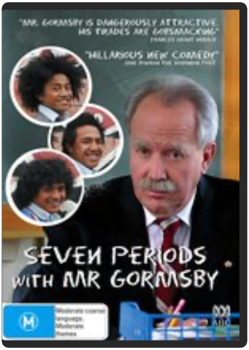Seven Periods with Mr Gormsby [ NON-USA FORMAT, PAL, Reg.0 Import - Australia ]Danny Mulheron Australia released, PAL/Region 0 DVD: it WILL NOT play on standard US DVD player. You need multi-region PAL/NTSC DVD player to view it in USA/Canada: LANGUAGES: English ( Dolby Digital 2.0 ), English ( Subtitles ), WIDESCREEN (1.78:1), SPECIAL FEATURES: Interactive Menu, SYNOPSIS: Seven Periods with Mr. Gormsby is an unrepentant politically incorrect, roller-coaster romp about an extraordinarily eccentric secondary-school teacher, who the Education Review Office in their last assessment described as follows: 'Mr Gormsby is an out-dated, reactionary, racist, sexist teacher completely out of touch with educational theory in the second millennium. He defies the curriculum in every subject and is a disgrace to the profession. He should have no place in any state or private school. We will close Tepapawai Boys High and appoint a commissioner if Mr Gormsby is not replaced forthwith.' ...Seven Periods with Mr Gormsby 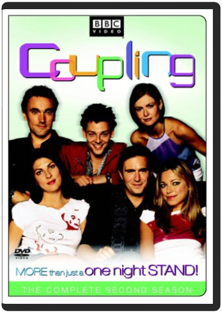Coupling - The Complete Second SeasonMykola Pawluk, Martin Dennis More than just a one night stand! Pick up BBC's most successful new comedy since Absolutely Fabulous, as Coupling returns with the two-disc set Coupling: The Complete Second Season. Find our who splits, who hooks up and pick up even more outrageous "Jeffisms" from this brilliant and sexy farce. 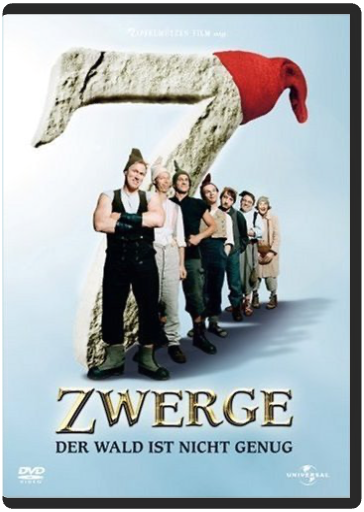7 Dwarves - The Wood is Not EnoughSven Unterwaldt Jr. Germany released, PAL/Region 2 DVD: it WILL NOT play on standard US DVD player. You need multi-region PAL/NTSC DVD player to view it in USA/Canada: LANGUAGES: German ( Dolby Digital 5.1 ), English ( Subtitles ), German ( Subtitles ), ANAMORPHIC WIDESCREEN (2.35:1), SPECIAL FEATURES: Alternative Footage, Anamorphic Widescreen, Interactive Menu, Scene Access, SYNOPSIS: The Seven Dwarves face their biggest challenge yet: Snow White asks them to help her prevent Rumpelstiltsken from coming to get her child. On their way they face many adventures and there are many surprises in store for them. The dwarves even visit a country they have never been to before, but which looks strangely familiar to us—this time the wood simply is not enough. ...7 Dwarves - The Wood is Not Enough (2006) ( 7 Zwerge - Der Wald ist nicht genug ) ( Seven Dwarves - The Forest Is Not Enough ) 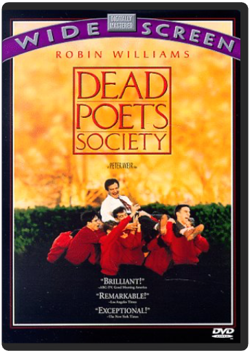Dead Poets SocietyPeter Weir Robin Williams turns in a dynamic, Oscar-nominated performance as a literature teacher whose unorthodox methods inspire his students and upset the administration at a boy's boarding school. Ethan Hawke, Robert Sean Leonard, Norman Lloyd also star. Peter Weir directs; filmed in Delaware. 128 min. Widescreen; Soundtracks: English Dolby Digital Surround, French Dolby Digital stereo. Memoirs of a Geisha Movies DVDKen Watanabe,Michelle Yeoh,Gong Li Ziyi Zhang, Dion Beebe hong kong movies DVD 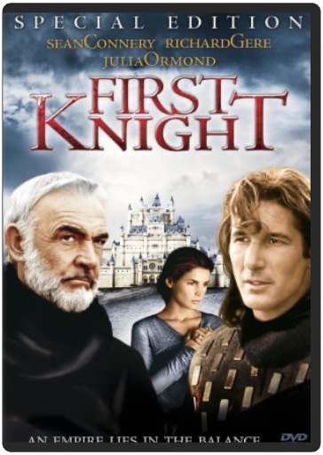First KnightJerry Zucker Together, Sean Connery, Richard Gere, Julia Ormond (Legends of the Fall, Sabrina) and Jerry Zucker,the director of Ghost, bring you a new vision of King Arthur's Camelot. A vision of breathtaking battles, of heart-pounding courage, of the undeniable love that brought an entire kingdom to its knees... and of the undying passion that made it live forever. |
 Made with Delicious Library
Made with Delicious LibrarySpringfield, State zipflap congrotus delicious library Doddridge, Edward